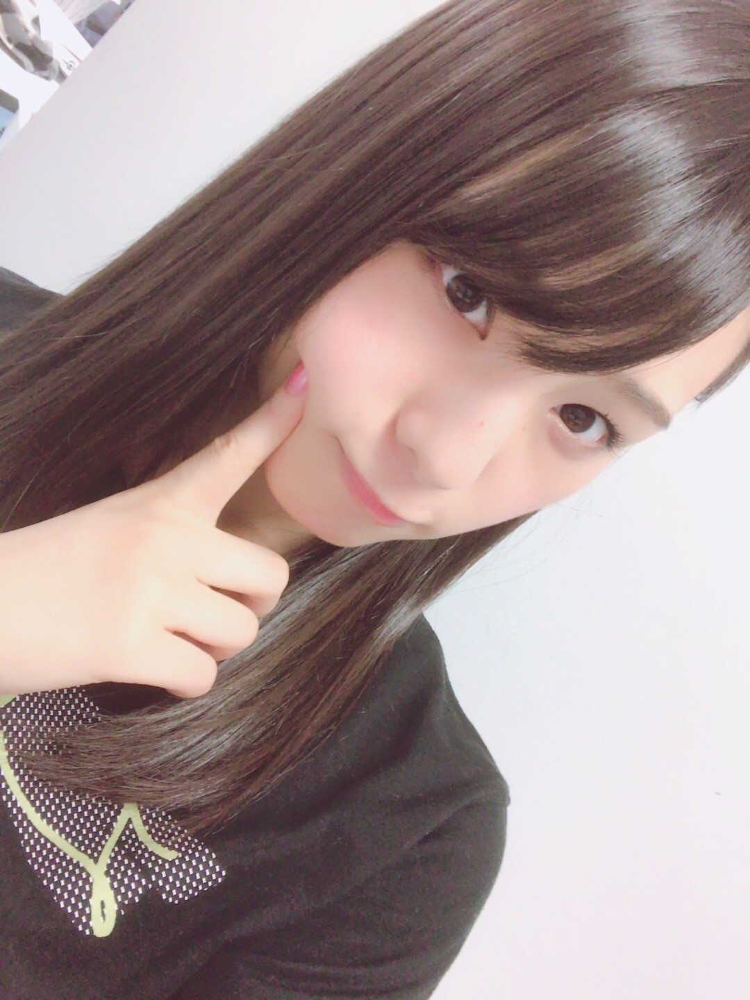
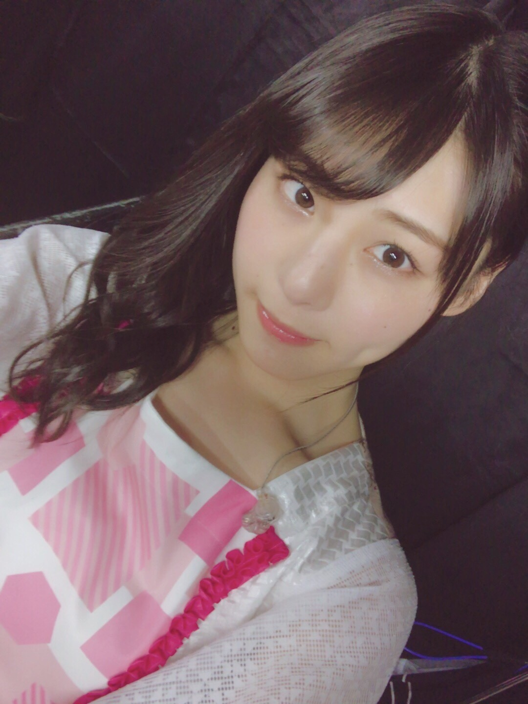
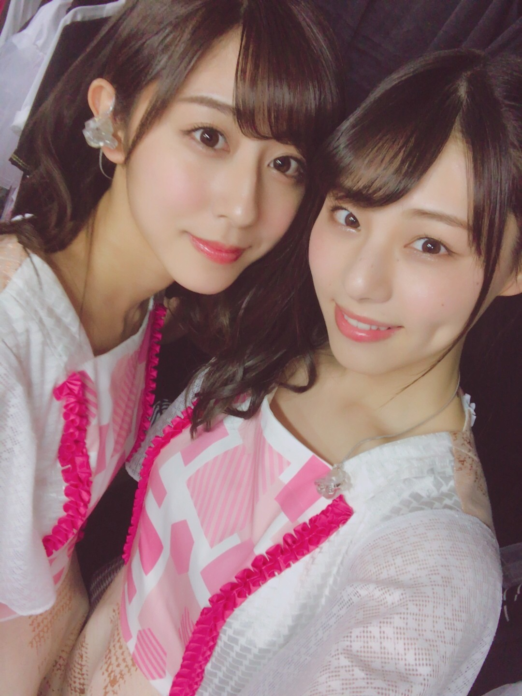
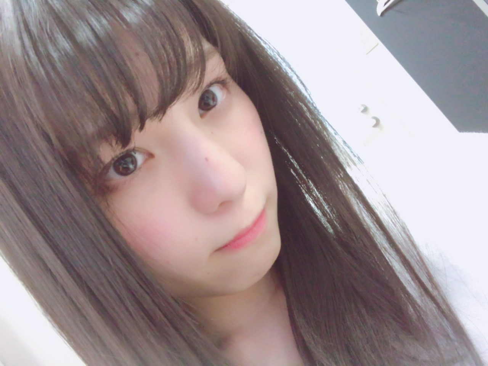
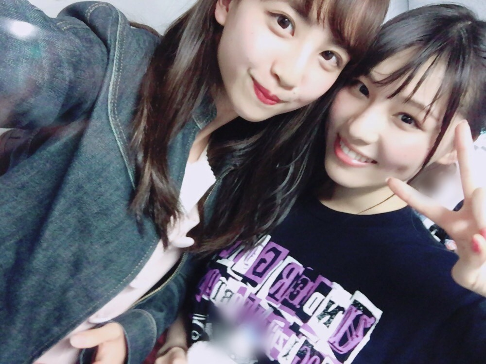

| 2017/04 23 Sun | 最強とか最弱とか_(．．*)vol.179 |
みなさんこんにちはー！
19歳 相楽伊織です！

アンダーライブ4公演
無事に終了しました(><)！
始まってしまうと
終わるのはあっという間で
皆さんとあの時間を共有したことが
大切な思い出になりました。
沢山の声援、応援
ありがとうございました。
そしてライブ制作に携わってくださった
スタッフの皆さん
素敵なステージをありがとうございました。
風船克服しようと思います(´･ω･`)
今回は｢ファンタスティック3｣という企画で
12人を4公演で3人ずつ
フィーチャーするという企画があり、
私は
･
｢君は僕と会わないほうがよかったのかな｣
･
｢初恋の人を今でも｣
･
｢涙がまだ悲しみだった頃｣
･
｢おいでシャンプー｣
の4曲をセンターで歌わさせてもらいました！

君僕の歌い出しと
初恋の落ちサビの部分を
ソロで歌ったのですが、
ライブで初めてソロで歌ったので
緊張はしましたが
皆さんに私の歌声を届けられたのが
今回のライブで一番良かったことかも(^^)
ダンスも先生に褒めてもらえて
歌う前もスタッフさんに
｢ちゃんと歌えてるから自信持ってね｣って
言ってもらえて嬉しかったぁ♪
今回センターだったみり愛も
プレッシャーを跳ね除けて
堂々としていて頼もしかったし、
私も元気と勇気をもらえたー！
これからも上を向いて頑張りますヽ(*^^*)ノ
んー、文章を
上手くまとめられない。。。

要するに
私はまだまだこれからって言いたい
見てろよって言いたい
潰されそうになっても
跳ねのけて見せる

見に来てくれた
優里さん、花奈さん、日芽香さん、蘭世
3期生のみんな
ありがとうございました♡

同い年の楓ちゃん！
今日の握手会でライブの感想を
沢山聞かせてください♡
 のぎ天2
のぎ天2
アンダーライブの裏側が放送されます！
是非見てね♪
お知らせしたい事がいくつかあるの！
待っててね(*^^)v
i o r i .

コメント(499)
2017/04/23 14:15